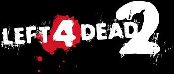

Left 4 Dead 4 es un juego de disparos en primera persona que se centra en la supervivencia contra zombis. Los jugadores forman equipos de cuatro sobrevivientes y deben abrirse camino por distintos escenarios llenos de enemigos.
El objetivo principal es llegar al punto de rescate mientras se enfrentan a hordas de zombis y criaturas especiales. La cooperación en equipo es fundamental para sobrevivir.
